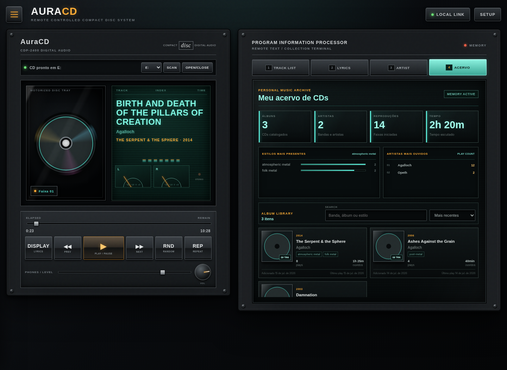

Reprodução contínua
Controle o leitor de CD, avance faixas, ajuste o volume e continue automaticamente para a próxima música.
PLAYER LOCAL PARA WINDOWS
Insira um CD, aperte o play e deixe o AuraCD buscar capa, álbum, faixas, letras e informações do artista. Cada audição passa a fazer parte da sua galeria pessoal.
INTERFACE HI-FI

Controle o leitor de CD, avance faixas, ajuste o volume e continue automaticamente para a próxima música.
Busca automática de capa, artista, ano e lista de faixas, com identificação assistida para edições raras.
Monte uma galeria local de artistas, álbuns e estilos, acompanhando reproduções e tempo de audição.
Seu histórico e seu acervo ficam no próprio computador. O AuraCD não exige conta para funcionar.
INSTALAÇÃO SIMPLES
O instalador é gráfico e o aplicativo executa em segundo plano sem abrir terminal ou janela preta. Ao final, o atalho do AuraCD é criado automaticamente na área de trabalho e no menu Iniciar.
Baixar o instaladorAuraCD-Setup.exe.COMPATIBILIDADE